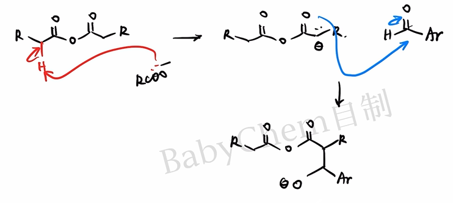
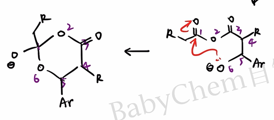
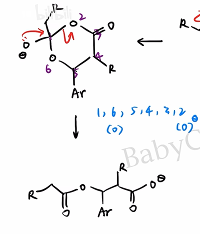
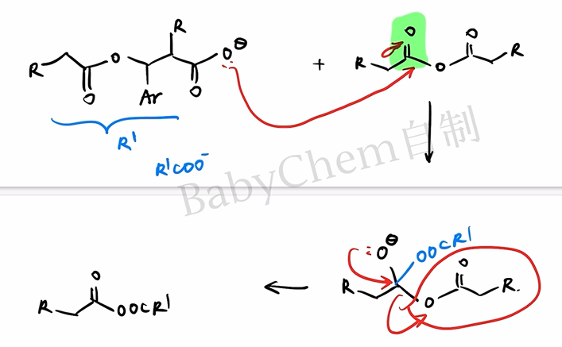
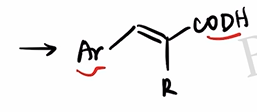
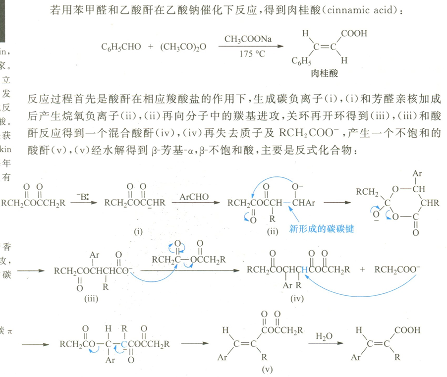
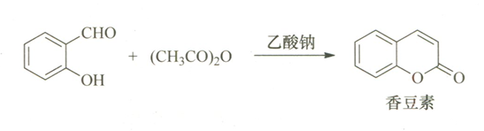
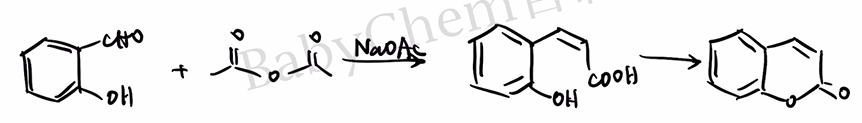
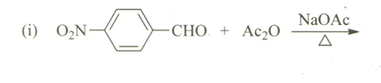

在碱性催化剂的作用下，芳香醛与酸酐反应生成 β-芳基-α,β-不饱和羧酸，这一反应称为 Perkin 反应。所用碱性催化剂通常是与酸酐相对应的羧酸盐。

顾名思义，Perkin 反应由 William Henry Perkin 发现。他本人也是第一届 Perkin Medal 的获得者。
Mechanism
在碱性催化剂的作用下，酸酐 α 位的质子被移去，形成碳负离子，随后亲核进攻芳香醛的羰基。

进攻形成的烷氧基负离子仍具有亲核性，而酸酐羰基具有亲电性，因此可以发生分子内亲核进攻，形成含六元环的四面体中间体。

四面体中间体有两种坍塌方式：氧原子的孤对电子若回攻 6 号氧原子，相当于第二步的逆反应；若回攻 2 号碳原子，则形成较稳定的羧酸根离子。显然后者是合理路径。

体系中仍有酸酐，新生成的羧酸根离子会按加成-消除机理进攻酸酐。这里同样涉及四面体中间体的形成与坍塌，不再赘述。

新形成的不对称酸酐仍有酸性的 α-H；芳基取代一侧的 α-H 酸性更强，更容易被碱移去。所得碳负离子随后按 机理消除羧酸根离子，得到不饱和酸酐，水解、酸化后生成目标羧酸。

对于 消除，还要考虑产物的立体选择性。通常芳基 与羧基处于双键两侧，即生成较稳定的 构型产物，以减小空间位阻。

大功告成！
基础有机化学给出的总反应机理如下。

Exception
Perkin 反应的一个重要立体化学特例是香豆素的合成。

一般而言，第一步产物中的 与芳基倾向于处在双键两侧；但这一构型不利于下一步分子内酯化。

分子内酯化可将能够关环的构型持续转化为低能量的内酯，因此会改变表观的立体选择性，使反应最终生成香豆素。
这一点可能成为有机推断题的考点，需要格外注意。

Practice
下面按“高考真题—基础迁移—竞赛迁移”分层。Q3—Q8 为依据 Perkin 反应规律编写的练习，并非冒充历届真题。
Q1 · 2022 北京高考
碘番酸的合成。


间硝基苯甲醛与正丁酸酐可以发生 Perkin 反应生成 G。写出 G 的结构简式，并注意其立体化学。
Q2 · 基础识别

写出对硝基苯甲醛与乙酸酐在无水乙酸钠、加热条件下的主要有机产物。
Q3 · 基础产物预测
苯甲醛与乙酸酐在无水乙酸钠存在下加热，随后水解、酸化。
- 写出主要有机产物的结构简式并标明 构型。
- 说明乙酸钠在反应中的作用。
- 为什么通常选用与酸酐相对应的羧酸盐？
Q4 · 酸酐变化
苯甲醛与丙酸酐在无水丙酸钠存在下加热，随后水解、酸化。写出主要产物，并指出产物中甲基来自哪一种反应物。
Q5 · 逆合成
拟用一步 Perkin 反应制备 -3-(4-硝基苯基)-2-甲基丙-2-烯酸。写出所需的芳香醛、酸酐和羧酸盐。
Q6 · 香豆素特例
水杨醛与乙酸酐在无水乙酸钠存在下加热可生成香豆素。
- 写出 Perkin 缩合后、尚未关环时的羟基肉桂酸中间体。
- 指出由该中间体生成香豆素的反应类型。
- 解释为什么这里观察到的立体选择性与普通 Perkin 反应不同。
Q7 · 二官能团底物
对苯二甲醛与足量乙酸酐反应。写出充分反应并水解、酸化后的主要产物，标出两个双键的主要构型，并给出 1 mol 对苯二甲醛至少需要的乙酸酐物质的量。
Q8 · 国初风格综合判断
在其他条件相同时，比较下列芳香醛发生 Perkin 反应的相对速率，并说明理由：
进一步判断呋喃甲醛能否作为 Perkin 反应底物，并简述依据。
参考答案
- Q1：G 为以间硝基苯基和乙基取代的 α,β-不饱和羧酸；稳定构型中芳基与羧基分居双键两侧。完整结构以原卷路线编号为准。
- Q2：主要生成 -3-(4-硝基苯基)丙-2-烯酸，即对硝基肉桂酸。
- Q3：产物为 -肉桂酸，。乙酸根夺取酸酐 α-H，促使亲核体形成；采用对应羧酸盐可减少不同酰基之间的交换及副反应。
- Q4：主要产物为 -2-甲基-3-苯基丙-2-烯酸，；甲基来自丙酸酐。
- Q5：对硝基苯甲醛、丙酸酐和丙酸钠。
- Q6：中间体为邻羟基肉桂酸；随后发生分子内酯化。能靠近并关环的构型被不可逆或优势地转化为稳定的六元内酯，推动平衡并改变表观选择性。
- Q7：主要产物为 -1,4-苯二丙烯酸（）；至少需要 2 mol 乙酸酐。
- Q8：速率通常为 -硝基苯甲醛 苯甲醛 -甲氧基苯甲醛。吸电子基增强醛羰基的亲电性，给电子基则削弱它。BTW,呋喃甲醛虽为杂芳醛，仍可发生该反应，生成呋喃丙烯酸类产物。
下载
- 下载：Perkin 反应分层练习（PDF）
- 下载：Perkin 反应参考答案（PDF）
- 2022 北京高考化学试题及答案（PDF）
- 2022 北京高考化学答案下载页（中国教育在线）
- 第 23 届中国化学奥林匹克初赛试题及解答（中国化学会）
说明：外部整卷链接用于核对原题与继续练习；Q3—Q8 是围绕 Perkin 反应设计的迁移题，不属于上述试卷。
End
特别鸣谢 B 站 @Babychem，机理图片来自这位 UP 的视频：
正在加载评论…